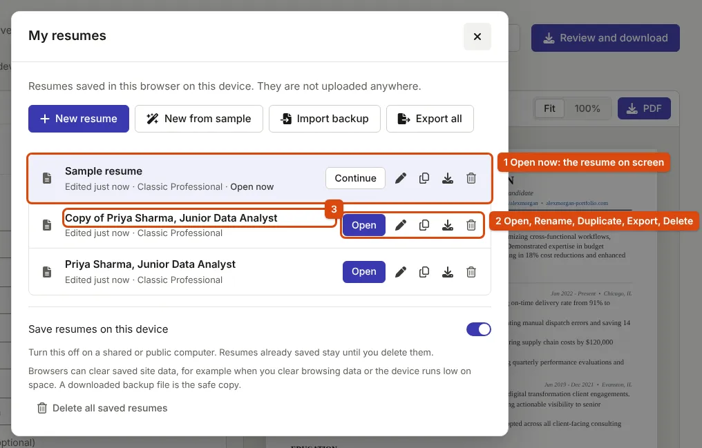
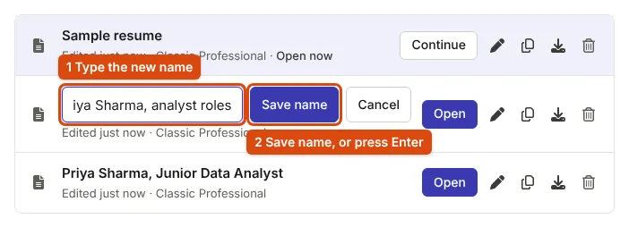

How to Open, Rename and Edit a Saved Resume
My resumes lists every resume saved in this browser. Open one, rename it, copy it for a different job, and read the save status so you always know what is stored.
What this tutorial covers
The resume builder keeps several resumes in the browser you use it in, so you can hold one version for analyst jobs and another for operations jobs, and come back to either later. This page shows the exact clicks in My resumes, explains the status line under the title, and says plainly what "saved on this device" does and does not mean. To write a resume from scratch, start with creating a resume from blank.
Before you start
- The same browser on the same device you saved the resume in. A resume saved in Chrome on your phone is not visible in Firefox, or on your laptop.
- At least one saved resume. If My resumes is empty, either nothing was saved here, saving was switched off, or the browser's data was cleared. If you have a backup file, restore it from the backup.
- Two minutes. Nothing here needs an internet connection once the page has loaded.
Step 1: Read the status line
Open the resume builder. It opens the resume you worked on last. Under the page title you see its name and a status, for example Priya Sharma, Junior Data Analyst and Saved on this device · just now. The status follows you as you type:
- Saving… while a change is being written. The builder saves about half a second after you stop typing, and at once when you switch away from the tab or close it.
- Saved on this device with how long ago: everything on screen is stored in this browser.
- New resume. It saves on this device as you type. for a new resume that is still empty. An empty resume is not stored until you type something into it, so starting one and changing your mind leaves nothing behind.
- Not saved followed by the reason, for example Not saved: saving is off on this device, Not saved: this browser is not keeping data for this site, or Not saved: storage failed. In each case a notice under the title offers Download backup, so you can keep a copy.
Step 2: Open My resumes
Select My resumes next to the page title (it is also in the Download step, under Keep your work). A window opens with the line Resumes saved in this browser on this device. They are not uploaded anywhere., four buttons (New resume, New from sample, Import backup, Export all) and the list of saved resumes, most recently edited first.

What you see in each row: the name, Edited with how long ago, and the template. The resume on screen says Open now and its button reads Continue; the others have Open. On a phone, the icon buttons show a short word under each icon.
Step 3: Open another resume
Select Open on the row you want. The window closes, the builder shows that resume from its contact details, and a short message confirms it, for example Opened “Analyst version”. The resume you were editing was already saved, so switching loses nothing. If it had changes that could not be saved (for example because saving is off), the builder asks before it leaves it.
Step 4: Rename it
Select the pencil button, Rename. The name turns into a text box with Save name and Cancel. Type a name that says what the version is for, then select Save name or press Enter; Escape cancels. A message confirms Renamed to the new name, and the name under the page title changes too.

A new resume is named after the full name and headline it had when it was first saved, and keeps that name until you rename it. Editing the resume never changes a name you chose.
Step 5: Duplicate it to tailor a copy
Select the copy button, Duplicate. A new row appears called Copy of followed by the original name, and the message says Created with that name. Open the copy and change it for the next job: reorder the skills, rewrite the summary, hide a section in Style. The original stays exactly as it was. Rename the copy straight away so the two are easy to tell apart.
Duplicate and Rename are disabled while saving is switched off, because their result could not be stored.
Step 6: Edit, and let it save
Make your changes in Write and Style as usual. There is no save button: watch the status return to Saved on this device. Undo and Redo at the top of the Write step go back and forward through recent changes. To remove a version you no longer need, select the bin button, Delete; the builder asks first, because a deleted resume cannot be recovered.
What "saved on this device" means
Saved resumes are stored by your browser, in its own storage for this website (IndexedDB), on the device in front of you. ApplyReady has no account and no server copy. That has consequences worth knowing:
- Clearing browsing data, cookies and site data, or this site's storage, deletes the saved resumes.
- In a private or incognito window, everything is deleted when the window closes.
- A browser short of space may delete data from sites you have not used for a while.
- Each browser and each device keeps its own list. Nothing moves between them by itself.
A downloaded backup file is the copy that survives all of these. Backing up and restoring resumes shows how, and the Your data page lists everything ApplyReady keeps in this browser.
What you get
- One resume per kind of job, each with a name you chose, listed with when it was last edited.
- A clear status under the title that tells you, at any moment, whether what you see is stored.
If something goes wrong
"Saving paused: changed in another tab"
The same resume is open in two tabs or windows and the other one saved a newer version. Saving stops here so neither version is overwritten, and a notice offers Load the other version, Save mine as a copy or Keep mine and overwrite. If this tab had no unsaved changes, it simply shows the newer version.
"Not saved: deleted in another tab"
The resume was deleted in another tab. Select Save it as a new resume in the notice to keep what is on screen.
My resumes is empty, but I saved a resume here
Check that you are in the same browser, not in a private window, and that site data was not cleared. If a backup file exists, import it. Otherwise the resume cannot be recovered: there is no other copy.
A row says "Damaged: cannot be opened"
The stored entry could not be read. Use Export raw to download what is stored, then Delete to remove it.
Sources
- MDN Web Docs: IndexedDB API, where the browser keeps saved resumes
- MDN Web Docs: Storage quotas and eviction criteria, when browsers delete site data
- MDN Web Docs: BroadcastChannel, how open tabs tell each other about saves
Every step on this page was followed in the current resume builder, and the screenshots come from it. Found a mistake? Report an error.